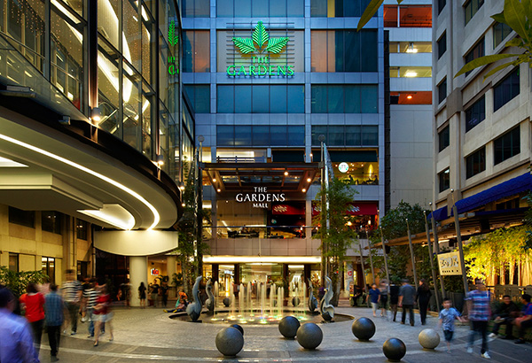

Shopping
The Gardens

Linked to Mid Valley Megamall via a covered pedestrian bridge and underground corridor, The Gardens Mall offers an upscale retail environment with a lengthy roster of luxury labels under its roof. Some of the brands represented at this mall include Burberry, Louis Vuitton, Versace, Hermes, Michael Kors, AX Armani Exchange, Gucci and Calvin Klein.